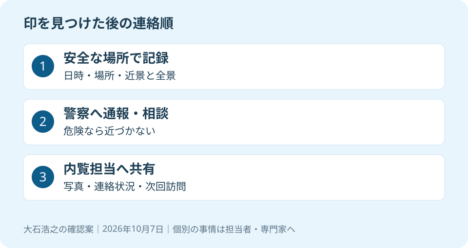

大石浩之（磐田市／不動産業）です。売却中の無人の実家で、ポストに見覚えのない印を見つけた。内覧までにきれいにしようと、拭き取る前に止まってほしいのです。私が先に整えたいのは、汚れの処理よりも記録と連絡の順番です。
見覚えのない印だけで、犯罪と決めない
警視庁の「令和8年全国地域安全運動」は、住宅の塀やポストの見知らぬ記号や数字について注意を促しています。下見の際に残された印の可能性があり、消す前の写真撮影と通報を案内しています。印があれば犯罪が確定する、という説明ではありません。
同ページの更新日は2026年10月1日です。運動期間は10月11日から20日まで。この記事は10月7日に内容を確認しました。東京都の案内を、磐田市で被害が起きたという情報に読み替えることはできません。磐田市内の個別の発生事実は確認していません。
意外に感じるかもしれませんが、最初の行動は「きれいに消す」ではありません。警視庁の案内では、写真と通報が先です。記号の意味をインターネットの一覧表に当てはめても、その家につけられた理由までは確定できません。
私は、印の解読に時間を使うより、いつ誰が見つけたかを残すほうが実務に役立つと考えます。買主候補に見せるために整える作業と、現地の異変を扱う作業は、分けて進めます。見栄えを優先して記録を失う順番にはしません。
写真・通報・消去の順番を決める
不審な印を見つけたときは、安全を確保した上で記録し、警察へ伝える順番を私は提案します。不審者がいる、侵入された形跡があるなど、危険が考えられる場合は近づかず、記録のために一人で敷地へ入らないでください。
撮影できる状況なら、印の近くの写真と、どの場所か分かる写真を残します。発見した日時、ポストの外側などの位置、以前の巡回時に気づいたかもメモします。「昨日つけられた」と断定せず、「今日初めて気づいた」と事実を分けます。
警察への連絡では、所在地と現地の状況を先に伝えます。印を消してよいか、ほかに残す記録があるかも確認してください。緊急時の通報を仲介会社の営業時間まで待つ段取りにはしません。警察への通報と売却担当者への連絡は、役割が異なります。
私は、写真を家族の連絡用に残すことと、住所が分かる形で広く公開することも分けます。管理用の記録には、鍵の保管場所や暗証番号が写り込まないようにします。共有先は警察、持ち主、必要な担当者に絞るという案内です。

内覧担当者には、写真と未確認事項を渡す
売却中の空き家の異変は、内覧を予定している仲介会社へ具体的に知らせます。私なら「何か印がある」という一言で済ませず、担当者が現地へ向かう前に判断できる情報を一枚に整理します。以下は法定の様式ではなく、連絡漏れを防ぐ私の提案です。
| 連絡する項目 | 書き方の例 |
|---|---|
| 発見日時と場所 | 10月7日の巡回でポスト外側に発見 |
| 写真と変化 | 近景と位置が分かる写真。前回の有無は未確認 |
| 警察への連絡 | 連絡済みか、確認中か。受けた案内を共有 |
| 次の訪問予定 | 内覧日時、訪問担当者、安全確認の担当 |
鍵の貸出履歴があれば、直前に誰が訪問したかも照合します。ただし、訪問者の記録だけで印の原因を決め付けません。鍵と現地確認の記録を分ける方法は、磐田の空き家の鍵管理と内覧前の確認で詳しく説明しています。
内覧を実施するかは、印の存在だけで一律には決められません。安全が確認できない状態なら、私は日程の調整を先に考えます。見学者に事情をどう説明するかも、確認済みの事実に限定します。推測を物件の履歴として言い切らないためです。
見回りを頼める良さと、担当の曖昧さ
静岡県警察の空き家向け広報紙は、定期的な見回り、施錠の確認、郵便物の回収、庭木や雑草の手入れを案内しています。無人の家を一度確認して終わりにせず、継続して管理する考え方です。広報紙には公表月日の記載がなく、10月7日に内容を確認しました。
私は、身近な人や管理担当者が変化を見つけられる仕組みには良さがあると考えます。遠方の家族が毎回往復しなくても、写真と報告で次の判断を共有できます。鍵、郵便受け、窓を同じ手順で見るだけでも、前回との比較がしやすくなります。
その上で注文したいのは、「仲介会社に頼んでいるから安心」で担当を曖昧にしないことです。販売の仲介を依頼したことだけで、巡回の回数や不審物への対応範囲が決まるわけではありません。契約や個別の約束を見て、何を引き受けているか確認します。
私には、見回りを手厚くしたい気持ちと、家族の負担を増やしたくない迷いがあります。毎日行けばよいと簡単には言えません。距離と費用、依頼できる相手を並べ、できる頻度と異常時の連絡を先に決めるほうが続くと考えます。
外部へ頼む場合は、空き家管理サービスの5つの確認も参考になります。通常の巡回に含む仕事と、臨時訪問や追加費用が必要な仕事を分けておくと、異変があった日の依頼が具体的になります。
磐田の実家で今日決める、一本の連絡順
磐田市や袋井市の実家を離れて管理する家族は、異変を見つけた人から誰へ知らせるかを今日決めてください。警察への連絡を遅らせず、その後に持ち主と内覧担当者が同じ記録を見られるようにするのが私の案内です。
私はこう考えます。離れて暮らす家族と管理の段取りを組む場面なら、紙に「発見した人」「警察へ状況を伝える人」「内覧担当へ知らせる人」を書きます。同じ人が兼ねても構いません。写真を送っただけで誰かが通報したと思い込まないよう、連絡済みの印を別に残します。これは実際の相談の再現ではなく、私が提案する一場面です。人を増やすより、担当の空白をなくしたいのです。
売却の準備をどこから始めるか迷う場合は、磐田の空き家相談で査定前に確認することにつなげます。安全確認が済んだ後で、家の状態と売却条件を整理すればよく、不安を理由にその日に売却を決断する必要はありません。
介護施設の運営から不動産事業を始めた富士ヶ丘サービスのような地域の窓口では、介護と実家の管理を一体で相談できます。磐田・袋井で家族が困らない売却のため、私は現地管理と販売の担当範囲を分けて案内します。まずは、次の内覧担当者に今の連絡順を確認してください。